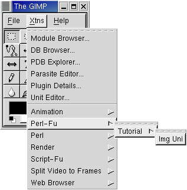
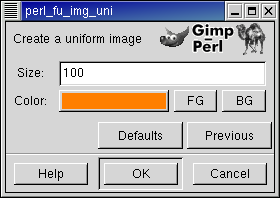
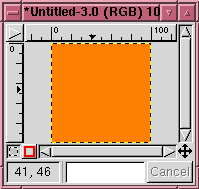
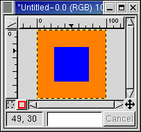

One of the wonderful features of GIMP is that it all its functionality may be accessed through scripting.
So far most of the script programming for Gimp has been done through Scheme through Script-Fu.
Unfortunately the Scheme environment Gimp provides is very primitive, e.g. without any reasonable error handling.
Furthermore, must users are not familiar with scheme as a language. Some users may therefore prefer to write scripts for the Gimp in Perl.
Perl as a language is probably more familiar to the web-literate users, as it is the major language for writing CGI scripts.
Now, Gimp scripts may also be written with Perl. This tutorial will describe how to write such plug-ins and scripts for Gimp.
As there are several excellent tutorial texts describing the perl language, this tutorial will assume at working knowledge of Perl,
and will instead concentrate on the use GIMP together with the of the perl modules Gimp and Gimp::Fu, written by Marc Lehmann, pcg@goof.com
The Perl::Gimp tutorial scripts have been tested with the following versions:
- Gimp version 1.2 or later, with all its prerequisites.
- Perl version 5.005 or later.
- The perl module Gtk, version 0.7003
- The Gimp module, version 1.201 or later
Perl and all its associated modules are available in source form from the Perl Comprehensive Archive network, CPAN. It is also possible to download them in RPM format from the ftp.gimp.org website.
Most scripts make use of the simplified interface Gimp::Fu provided with the Gimp module. Gimp::Fu provides a framework for entering parameters to the script in a frame like interface, just like Script-Fu, but also allows running of the script in batch mode from the command line. This tutorial will go into detail descriptions of the construction of a Gimp::Fu script, but before we do this, here is the general framework of a Perl-Fu script.
#!/usr/local/bin/perl use Gimp ":auto"; use Gimp::Fu; # Register extension to gimp register ... ; exit main(); # Handle over control to gimp
The interesting items to note in the script is the use of the two modules Gimp and Gimp::Fu, the register function, which will be described in detail below, and the way the control is handed over to Gimp module on line 9. The use of the ":auto" statement makes perl automatically include all of the gimp PDB functions and constants into the perl name space.
Before going into the details of the Perl-Fu script, we will describe how to access the various the functionality of GIMP. All functions known to GIMP are available through the procedural database (PDB). All the PDB functions may be called from perl, as will be seen below. These PDB functions are either internal to gimp, or have been made available through a plug-in or a script extension, but as far as the caller is concerned there is no difference. As we will see below, when a perl function is registered through the register function, it will appear in the PDB as well.
Gimp/perl comes with a PDB browser available in Xtns -> PDB Explorer. (There is another PDB browser available in Xtns -> DB Browser but the PDB Explorer is more suited for Perl users.) This browser provides a way of seeing all the functions in the PDB, as well as their input and output parameters. E.g. the PDB Explorer entry for gimp_image_new, which will be used in the example below looks like this:
| |||||||||||||||||||||||||||||
All the the constants mentioned in the PDB Explorer have been defined within Gimp::Fu and may be used within perl. E.g. I.e. a call to create a new image of size 100x150 of type RGB looks as follows:
$img = gimp_image_new(100, 150, RGB)
The PDB entry above shows that gimp_image_new is called with three parameters width, height, type. These are all of type INT32. This type and other types will be explained below.
Script-Fu scripts are called just like any other script according to the PDB signature in the PDB browser. E.g. to run the Script Fu basic one logo just do:
script_fu_basic1_logo("Hello", 72,
"-*-utopia-*-r-*-*-72-*-*-*-*-*-*-*",
[0,0,0],[1,1,1]);
Unfortunately, as of the writing, calling Script Fu from perl has proved a to make both ScriptFu and gimp very unstable and caused both of them to crash. If any of the readers is able to describe what is needed to get it to run successfully, I will happily include this in a future version of this tutorial.
NOTE: When calling a PDB function from Perl::Gimp that has an image and a drawable as the two first arguments, only the drawable should be given as argument in the calling sequence.
Gimp-Fu is perl's answer to Script-Fu. It provides a simplified method for accepting parameters for a script through a Gtk interface,
just like script-fu, but as we shall see below, it has some additional bells and whistles.
The main function for a Gimp-Fu script is the register function. This function declares the interface of the script to gimp.
The register function takes the following 10 parameters, that must all be provided:
- The name of the function - a string. This is the name of the function as it will be known in the PDB.
- A small description - a string
- A help text - a string
- The authors name - a string
- The copyright of the script - a string
- Creation date - a string
- Menu path - a string. The path has one of the two forms:
- "<Toolbox>/Xtns/Perl-Fu/Script Name"
- "<Image>/Perl-Fu/Script Name"
- The acceptable image types - a string. This list contains a list of image types acceptable.
This field is only used for scripts that are in the "<Image>" hieararchy. Possible values are listed in the table below:
value meaning * Any images are accepted RGB RGB images RGBA RGB images with alpha channels GREY Grey level images - Parameters - A reference to an array of parameters. (A reference to an array in perl is simply an array written within square brackets).
Each parameter in turn is a reference to an array containg the following four or five values:
- The type of the parameter. The types recognized by Gimp::Fu and their perl are given in the following table:
Type Possible forms Comment PF_INT
PF_INT32
PF_INT16
PF_INT842 A number. PF_INT is a synonym to PF_INT32. PF_VALUE
PF_FLOAT3.141 A floating point number. PF_TOGGLE
PF_BOOLEAN0
1A boolean value. PF_SLIDER
PF_SPINNERAn integer value through a slider and a spinner interface. The range parameter should be specified and is interpreted as minimum, maximum, and step, e.g. [0,100,1]. 
PF_FONT -*-blippo-*-*-*-*-24-*-*-*-*-*-*-* A font in X11 font format. This interface launches a font browser. PF_STRING "A string" A string PF_COLOR
PF_COLOUR[255,127,0]
#ff7f00A color may either be expressed as a reference to an array of three components, or as a hexadecimal triple, proceeded by the hash sign. PF_TOGGLE 0
1A boolean toggle PF_IMAGE - An image PF_DRAWABLE - A drawable. PF_BRUSH A brush PF_GRADIENT A gradient PF_PATTERN A pattern - The name of the parameter - a string
- A help text for the parameter
- Default value for the parameter. This should be given in the form listed in the table above.
- An array defining allowed range for the value. This is only possible for PF_SLIDER and PF_SPINNER.
- The type of the parameter. The types recognized by Gimp::Fu and their perl are given in the following table:
- A reference to an array of return types of the sub in the 11th parameter.
- The sub to be called - a reference to a sub . This subroutine will be called when the associated menu entry declared through the Menu path described above.
When the sub is called it is passed as arguments the list of parameters declared in field 9, declared above, and in the case of a "<Image>..." script,
the active image and layer as first and second parameters.
A reference to a sub in perl may be declared in two ways. Either by declaring a subroutine at a different place in the source file, e.g. sub run and reference it by writing \&run. An alternative way is to write it inline by simply writing:
sub { ($text, $color) = @_ ; ... }
The sub is expected not need to display a new image after it has created it. Instead it is expected to return the new image or images that were created in accordance with the return types declared in parameter 10 of the register call described above. This behaviour has been added in order to be able to call the sub noninteractively. More about that behaviour below.
The following Gimp::Fu script example shows the steps described in the previous section. It registeres a script that takes two values, the size of the image and a color, and then produces an image of the requested size with the requested color. Quite useless, but is shows the importent steps of how to register a script, how to create a new image, and how to access some PDB functions.
Most of these commands are directly copied out the PDB.
This script shows the essential steps of producing a stand-alone script:
| line(s) | Description |
|---|---|
| 10 | Creating a new image. |
| 13-14 | Creating one or more layers. |
| 17 | Attaching the layer to the image. |
| 19-23 | Do some painting operations in the layers. |
| 26 | Return the image to the caller |
| 29-42 | Registration of the extension |
To test the script, save it in the directory $HOME/.gimp-1.2/plug-ins. It must then be made executable through the command:
chmod +x $HOME/.gimp-1.2/plug-ins/uni
Then start gimp. It is generally a good idea to test the syntax of the script with perl -c before starting gimp.
(A more official way to add scripts is to use the gimptool --install-bin command).
Note: Due to a bug in gimp (verified for version 1.2) it is not possible to add scripts once gimp is running. On the other hand, it is possible to change a script which has already been registered, as long as the parameters don't change.

The script is now accessible through the menu system through the Xtns top menu.

When choosing this menu entry the following screen is popped up.

Choosing the default values creates result like image above.
Gimp::Fu provides an alternative object-oriented syntax for the image and the drawable commands. Here is a table showing the procedural vs the object oriented syntax for a few commands:
| procedural syntax | object oriented syntax |
|---|---|
| gimp_image_add_layer($drw,-1); | $img->add_layer($drw, -1); |
| gimp_drawable_width($drw); | $drw->width(); |
The substitution rule for converting a PDB turning into a method is as simple as erasing ``gimp_image_'' from the beginning of the function call
and calling this method through the image object. Similarly for the gimp_drawable_... functions.
Note that the object oriented syntax is only syntactic sugar that makes the calling syntax cleaner in some cases. The error messages are still given in the procedural format.
In the uni script the function gimp_edit_fill was called to fill the whole image. Looking at the info for gimp_edit_fill in the DB browser we find the following:
| ||||||||||||||||||||
Thus, if a selection is active when gimp_edit_fill is called only the selection is painted. There are lots of ways of choosing a selection as can be seen when searching for a ``select'' in the PDB. The example below uses gimp_rect_select, whose entry in the PDB looks as follows:
| ||||||||||||||||||||||||||||||||||||||||||||
A simple use of this function which selects a rectangle in the middle of an image and paints that rectangle with a user defined color. This example also introduces a couple of new features we haven't seen before:
- The script is associated with an image since its menu path starts with "<Image>/...". Note that as a result of this the callback sub in line 13 receives two additional parameters, the active image and the seleced drawable.
- The use of a subroutine without a name as a parameter to register
- The use of the PDB functions gimp_undo_push_group_start and gimp_undo_push_group_end. These functions declare an undo group. When an undo is done on the image, instead of having the individual operators undo, all the actions between the undo start and the undo group calls will be undone at once.
- The return type of the register function defines what new images should be displayed by gimp. In this case we don't want to display any new images and therefore return an empty array.

The result when run on our previous image.
Besides rectangular selections elliptical selections may also be created through the PDB functions
gimp_ellipse_select() and gimp_free_select() which allows the selection of ellipses and polygons.
More complex selections may be created through the channel mechanism. The PDB gimp_channel_new() creates a new channel.
The channel is a drawable that may be painted into, just like any other drawable, but with the difference that it is always a grey level image.
Once the channel is finished, the channel may be loaded into the selection through the PDB function gimp_selection_load().
Search for ``select'' in the DB Browser to see a list of all the selection related functions.
In perl it is trivial to write loops that together with the various selecton tools gives powerful creative possibilities. Here is an example that mixes colors in circles. There is nothing really new here, but it shows the power of the what we have described above.

The result.